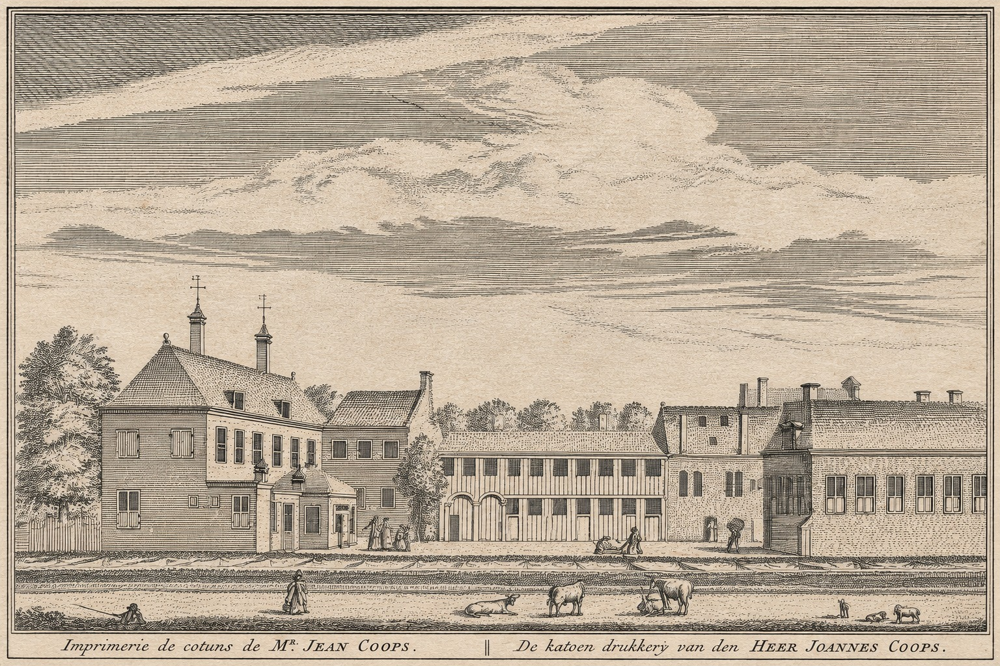
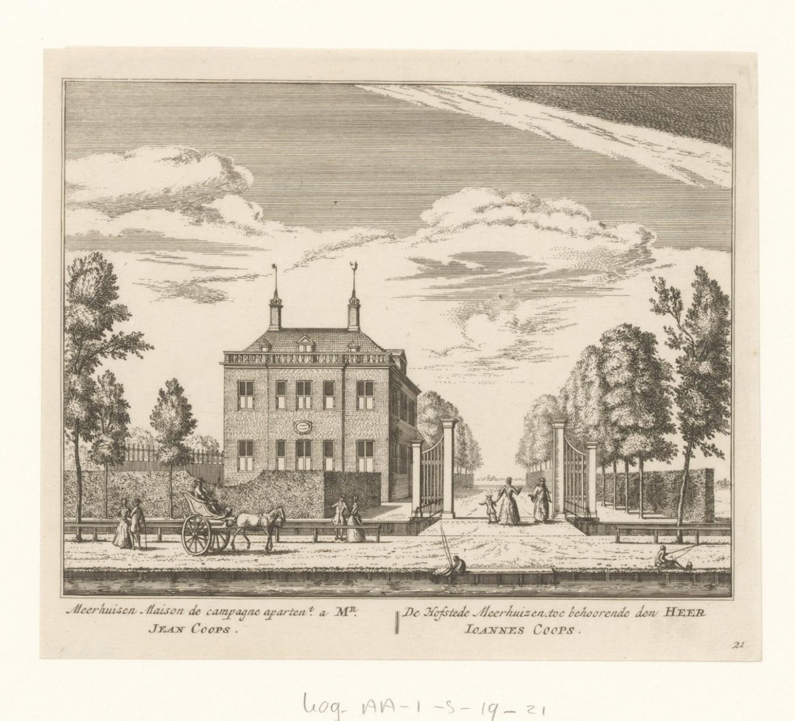

Biografieën Amsterdam, achttiende eeuw
Johannes (Jean) Coops
Katoendrukker aan de Amstel
Abraham Rademaker bracht in 1730 twee plekken met de naam Coops in beeld. De ene prent toont een katoendrukkerij, de andere de hofstede Meerhuizen. Zijn etsen geven Johannes Coops een plaats aan de Amstel. Was hij verwant aan de familie Coops van deze website?
Deel een akte, foto of aanwijzing
01 / Eigentijdse prenten
De drukkerij aan de Amsteldijk
Op Rademakers ets uit 1730 ligt achter de weg een rij gebouwen. Op de voorgrond staat vee. Het tweetalige opschrift noemt de drukkerij van Jean en Ioannes Coops. Het Rijksmuseum beschrijft het blad als nummer 12 uit de reeks Hollands Arcadia, uitgegeven door Leonard Schenk in Amsterdam. De prent geeft de naam waaronder de onderneming bekend was en laat zien hoe Rademaker haar omgeving voorstelde. [1]
In de zeventiende eeuw kwamen veelkleurige katoenen stoffen uit India in Europa in de mode. Amsterdamse drukkers gingen de ingevoerde sits imiteren door zelf katoen te bedrukken. Langs de Amstel lag Coops’ bedrijf bij het Verwerspad, de huidige Tolstraat. Ook op andere plekken langs de rivier lagen werkplaatsen voor de katoennijverheid, zoals De Catoenboom en De Runmolen. De bronnen geven vooral zicht op Coops’ vestigingsplaats. Zijn producten, werknemers en werkwijze zijn nog open onderzoeksvragen. [2] [4]
Volgens historicus Ruud Paesie kwam het terrein van de katoendrukkerij in 1782 in handen van George Dommer. Hij begon er met zijn zoon Nicolaas een porseleinfabriek. Dat is een later hoofdstuk in de geschiedenis van het terrein. [5]
02 / Prent en plaatsgeschiedenis
Meerhuizen en het latere Berghlust
Meerhuizen. Verder langs de Amstel, ter hoogte van de huidige Amstelkade, lag de hofstede Meerhuizen. Volgens het overzicht Buitenplaatsen in Nederland kocht de Amsterdamse katoendrukker Johannes Coops haar in 1728. Op een afzonderlijke ets uit 1730 schrijft Rademaker de hofstede toe aan dezelfde naam als de drukkerij, in het Nederlands Ioannes Coops en in het Frans Jean Coops. [3]


Het terrein bij het Verwerspad. Volgens de plaatsgeschiedenis van Overamstel kocht Johannes Coops senior in 1726 grond naast de drukkerij. Dezelfde bron noemt Johannes Coops junior en Gerardus Coops als zijn zonen en als verkopers van een deel van het terrein met een herenhuis in 1751. Koper Jan van den Bergh gaf de buitenplaats de naam Berghlust. Wie het herenhuis liet bouwen, blijft open. Voor de verwantschap van de verkopers is de oorspronkelijke akte een belangrijke volgende bron. [4] [5]
Berghlust kwam later in handen van Gerard Engelberts en Magdalena Nutges en ging Overamstel heten. De twee publicaties verschillen over welk deel in 1751 werd verkocht en dateren de latere aankoop verschillend, in 1762 of 1763. De transportakten kunnen uitwijzen hoe het perceel was begrensd en wanneer de overdracht plaatsvond. [4] [5]
03 / Vergelijking met onze genealogie
Was de katoendrukker familie?
De genealogie van Coop Muller de Oude bevat enkele achttiende-eeuwse Amsterdamse aanknopingspunten. Ze geven plaatsen en namen om in de archieven op te zoeken. Een akte die een van deze personen met de katoendrukker verbindt, is nog niet gevonden. [7]
- Elisabeth de Jong en Bernardus Coops (VII.33). Elisabeth werd in 1712 in Amsterdam gedoopt. Zij trouwde in 1739 in Deventer met Bernardus Coops, een winkelier die in Doetinchem was gedoopt. In 1789 werd zij in Amsterdam begraven. Haar doop valt het dichtst bij de tijd van de drukkerij. Haar band met de familie Coops loopt via haar huwelijk.
- Aaltje en Anna Catrina Coops (VII.22, VIII.24). De zussen werden in Doetinchem gedoopt en in Amsterdam begraven, Aaltje in 1778 en Anna Catrina in 1783. Aaltje was getrouwd met Derk Coops (VIII.39), banketbakker en confiturier in Amsterdam. Anna Catrina was getrouwd met de Amsterdamse kaaskoper Hendrik Hettersche, die in Doetinchem was gedoopt.
- Fredrik Coops (VIII.19). Hun broer Fredrik, gedoopt in Doetinchem in 1745, staat vermeld als koopman in Amsterdam. Hij trouwde er in 1783. Zijn kinderen werden er tussen 1784 en 1792 gedoopt. Die inschrijvingen bieden namen van getuigen om verder te onderzoeken.
Deze vermeldingen liggen grotendeels later dan de prent uit 1730 en de verkoop van de hofstede in 1751. Een testament, boedelscheiding of transportakte waarin zowel de katoendrukker of zijn erfgenamen als een herkenbaar lid van de familie uit Doetinchem, Zelhem of Vorden voorkomt, zou een veel directer aanknopingspunt geven. [7]
04 / Een Amsterdamse onderzoekslijn
Gerrit Jans Coops gaat in ondertrouw
Op 3 december 1751 gingen Gerrit en Magdalena van Campen in Amsterdam in ondertrouw. Volgens de gepubliceerde transcriptie was Gerrit 25 jaar, afkomstig uit Amsterdam en woonachtig op de Duivemarkt. Zijn vader staat vermeld als Johannes Koop. Magdalena was 34 jaar, woonde in de Passeerderstraat en werd bijgestaan door haar halfzus Anna van den Bergh. Haar ouders waren overleden. De transcriptie schrijft de naam van de bruidegom als Gerrit Koop. [6]
Vindplaats van de inschrijving
Stadsarchief Amsterdam · DTB-registers · toegang 5001 · inventaris 595 · p. 171. De lezing hierboven volgt de transcriptie bij bron 3aw. De originele scan is nog niet gecontroleerd.
Naar het ondertrouwregister · Zoekhulp van het StadsarchiefDezelfde publicatie noemt Gerrit en Ante als kinderen van Gerrit en Magdalena. De transcriptie van Magdalena’s begraafinschrijving van 17 mei 1761 vermeldt twee kinderen. Bij zijn ondertrouw met Johanna Maria Haak op 13 november 1761 staat Gerrit als weduwnaar van Magdalena geregistreerd. Deze vermeldingen volgen Gerrits gezin aan de Duivemarkt. [6]
05 / Hypothesen en open vragen
Welke akten kunnen de families verbinden?
Wie was Gerrits vader?
De publicatie Afstammelingen van Jan van Eijkhout koppelt de bruidegom aan een doop op 30 augustus 1726 in de Westerkerk. Zij noemt als ouders Jan Pietersz Coop en Annetje Joosten van Eijkhout. In de transcriptie van hun ondertrouw uit 1709 staat Jan als molenaar aan het Fransepad vermeld. In de transcriptie van Annetjes begraafinschrijving uit 1760 heet haar overleden echtgenoot Johannes Koop. Samen maken die vermeldingen Jan Pietersz tot een concrete kandidaat voor Gerrits vader. Een koppeling aan de katoendrukker of aan de familie uit de genealogie van deze website blijft onbewezen. [6]
Waren Anna en Jan van den Bergh verwant?
In 1751 duikt Anna op bij de ondertrouw van haar halfzus Magdalena. Jan verschijnt datzelfde jaar als koper van de hofstede. Hun eventuele verwantschap is onbewezen. Een doop-, huwelijks- of boedelakte die de gedeelde ouder van Anna en Magdalena noemt, zou helpen om Anna te identificeren en de hypothese te toetsen. [4] [6]
Wie behoorden tot het gezin van de katoendrukker?
De verkoopakte van 1751 en eventuele testamenten of boedelscheidingen kunnen helpen vaststellen in welke hoedanigheid Johannes junior en Gerardus optraden. Ook de herkomst, echtgenote en verdere familie van Johannes senior vragen om bronnen die hem herkenbaar verbinden met zijn bedrijf of bezit. [4]
Verantwoording
Bronnen en vindplaatsen
- Abraham Rademaker, 1730. Ets, uitgegeven door Leonard Schenk. Foto op deze pagina gemaakt door W.J.C. Coops van de originele prent in zijn bezit. Voor de beschrijving is een ander exemplaar geraadpleegd, KOG-AA-1-5-19-12, bruikleen van het Koninklijk Oudheidkundig Genootschap, publiek domein. Rijksmuseum, Gezicht op de katoendrukkerij van Joannes Coops aan de Amsteldijk.
- Achtergrond over sits en de katoennijverheid. Allard Pierson, Overtooms Welvaren en Gemeente Amsterdam, Het Luycksterrein, AAR 26, § 2.1 (pdf).
- De ets en de plaatsgeschiedenis van Meerhuizen. Rijksmuseum, Gezicht op buitenplaats Meerhuizen, KOG-AA-1-5-19-21 en Buitenplaatsen in Nederland, Meerhuizen.
- Plaatsgeschiedenis met verwijzing naar Noord-Hollands Arcadia. Buitenplaatsen in Nederland, Overamstel.
- Ruud Paesie, 1 april 2023. Ons Amsterdam, Toegangspoort van Overamstel in de tuin van het Rijksmuseum.
- Genealogische publicatie, persoonsnummers 1392 en 13927. Verwijzingen naar Stadsarchief Amsterdam, toegang 5001. Doop Gerrit (3au), inv. 110, p. 216 (fol. 108v), nr. 1. Begraven Magdalena (3av), inv. 1241, p. 210, scan 211. Ondertrouw 1751 (3aw), inv. 595, p. 171. Tweede ondertrouw (3ax), inv. 605, p. 408. Zie ook de ondertrouw van Jan Pietersz en Annetje (3y) en Annetjes begraafinschrijving (3v). Afstammelingen van Jan van Eijkhout (pdf).
- Genealogie van Coop Muller de Oude, onder meer VII.22, VII.33, VIII.19, VIII.24 en VIII.39. Familie Coops, Genealogie.